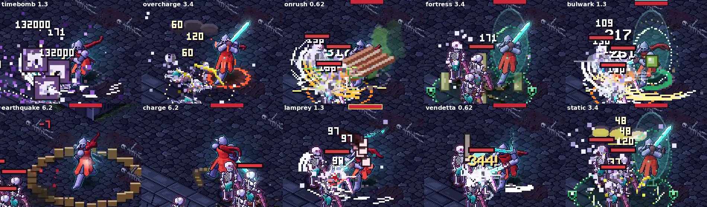
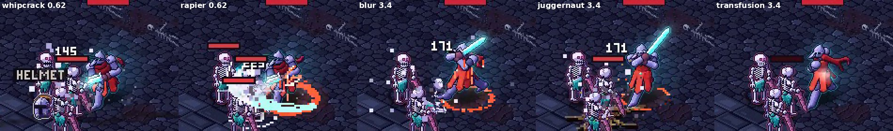
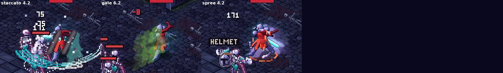
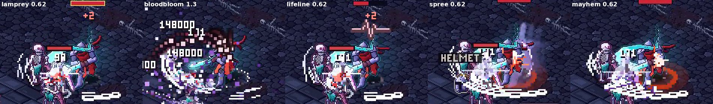

Every meld film was checked at the game's own size against your living Art Rulebook: five moments each (two in front, two behind, one on a monster), plus a read of the code that paints them. Below is each rule they break, which melds, and what I'll do.
Animations 7: "Every word has its look ... in front on the hit and behind on what is left." The third step of each film, a skeleton carrying the meld, is how you see its look on a monster.
In these 17 of the last 46, the skeleton never got hurt, brought low or killed in the film, so its look never fired. I told you every moment showed. That was true for in front and behind, not for this step.
Hornet, Quicksilver, Cluster, Double Tap, Redoubt, Bloodbloom, Lifeline, Detonator, Hair Trigger, Blastwave, Rapier, Riposte, Vendetta, Shieldwall, Rampage, Sanctuary, Aegis
Fixing: the film's third step makes each one happen (the hero hits back, the skeleton is brought low or killed), and the check fails any film whose monster look does not play. The first 52 are re-checked the same way.
How art is made 9: "A prop, a piece of a place or an effect is shaped as the thing it is, never a plain ball, box or ring."

Time Bomb, Overcharge, Onrush, Fortress, Bulwark; Earthquake, Charge, Lamprey, Vendetta, Static.
Fixing: each drawn as the thing it is. A bomb gets a round iron body, a fuse and sparks. A cloud gets ragged, billowing edges with a lit top. Rocks are cracked stone, and smoke rolls in curls. A ring becomes a ripple of water, a sound-wave of broken arcs, or runes.
Animations 1: "as big, wild, kinetic and weighty as it can be ... a notch too high, never a notch too low."

Whipcrack, Rapier, Blur (behind), Juggernaut (behind), Transfusion (behind).
Whipcrack, Rapier, Rampage, Reverb (in front), Aftermath (in front), Ambush (behind), Blur (behind), Juggernaut (behind), Daze (behind), Bedrock (behind), Transfusion (behind)
Fixing: Whipcrack's crack becomes a lash across the screen with a white snap and a kick. Rapier and Rampage get their own looks, not just Frenzied's ring under him. The faint ones behind are made as big as the rest.
Animations 4: "No effect covers the hero, or a monster's wind-up or danger mark, for more than a blink."

Staccato (behind), Gale (on a monster), Spree.
Fixing: Staccato's slashes go on the monster it hits, not on him. Gale's gust and Spree's haze pass by him and don't sit on him.
Movement 7: "The moment a heavy blow lands, everything holds for a tenth of a second."
None of the 98 holds still on its big moments. The game's own words and melds do (Heavy, Volatile, the first eight melds).
Fixing: the hold on every boom and heavy landing (Time Bomb, Detonator, Blastwave, Cluster, Cataclysm, Earthquake, Anvil, Charge and the rest of the Heavy and Volatile melds).
Pillar 4: "What glows on an enemy is hot pink burning to gold. Nothing else glows in those colours."

Lamprey, Bloodbloom, Lifeline, Spree, Mayhem.
Six meld colours sit on the enemy's pink. Bloodbloom is exactly its shade. You said yes to their stones, so changing them is your call. My pick: move them to blood red and salmon, as Leech and Power already are, and redo their stones to match.
On the other side, a few icy melds (Glide, Flash Freeze, Double Tap, Ripple, Quicksilver) are close to the friend's cyan. When a monster carries one, it would glow nearly cyan. My pick: on a monster, those draw in Frost's deeper blue.
Two things in the films that aren't art but could mislead you: the huge numbers (132000) come from how the film sets up its kills, and the HELMET labels are loot dropped by the film's kills. Both come out of the films.